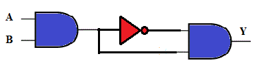
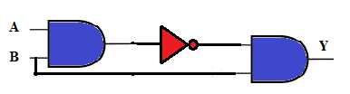

Q1. “If the driver is present AND the door is NOT closed AND the ignition switch is on, then the system should turn ON the warning light.” The Boolean expression for this application can be written as:
A
W = (driver_present).(door)’.(ignition_on)’
B
W = (driver_present).(door)’.(ignition_on)
C
W = (driver_present).(door).(ignition_on)
D
W = (driver_present).(door).(ignition_on)’
Ans is B
Q2. To design a high speed circuit, a designer should make use of:
A
Single - Level Logic
B
Multi - Level Logic
Ans is A
Q3. If in the given circuit, D and I inputs are shorted and connected as common input D with the third input as it is, the Boolean expression for this circuit would be
A
W = D.B.B’
B
W = D’.B
C
W = D.B’
D
W = D’.B’
Ans is C
Q4. What is the Boolean expression for the circuit shown below:
.
A
Y = A’.B’
B
Y = (A.B)’
C
Y = 1
D
Y = 0
Ans is D
Q5. What is the Boolean expression for the circuit shown below:
.
A
Y = A’.B’
B
Y = A’.B
C
Y = A.B’
D
Y = 0
Ans is B